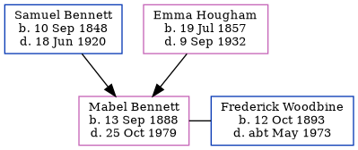

Emily Philpott (née Bennett) 1885 - 1960
[ Home ] | [ Calendar ] | [ Surnames Index ] | [ Census Index ] | [ Family History ]A servant and the 3rd of 5 children of Samuel Bennett (a farm servant) and Emma Hougham, Emily Bennett, the first cousin three-times-removed on the mother's side of Nigel Horne, was born in Preston, Kent, England on Jun 4, 18851 and married James Philpott (a seaman with whom she had 1 child, Phillip Ernest) in Sibertswold, Kent, England on Sep 12, 19082.
During her life, she was living at Station Road, Bekesbourne, Kent on Apr 5, 18913; at 33 Priory Road, Dover, Kent on Mar 31, 1901; at 28 Minerva Avenue, Dover, Kent on Apr 2, 1911; in Sibertswold, Dover, Kent on Jun 19, 19214; and at Rose Bank, Shepherdswell, Kent on Sep 29, 19391 and in 1960.
She died on Dec 2, 1960 in Dover, Kent, England.
Parents
- Samuel was born on Sep 10, 1848
- Emma was born on Jul 19, 1857
Children
- Phillip Ernest was born on Aug 17, 1920
Citations
- 1939 Register - Findmypast (was the wife of the head of the household)
- Kent Marriages - Findmypast
- 1891 England, Wales & Scotland Census - Findmypast (was age 6 and the daughter of the head of the household)
- 1921 Census Of England & Wales - Findmypast (was age 36 and the wife of the head of the household)
Media
1891 UK Census

1901 UK Census

1911 UK Census - page 1

1911 UK Census - page 2

Emily Bennett - probate

England & Wales births 1837-2006 - BMD/B/1885/3/AZ/000044/260
Kent Marriages - GBPRS/M/84174310/2
England & Wales marriages 1837-2008 - BMD/M/1908/3/AZ/000031/214
Kent Banns - GBPRS/M/85008391/2
1939 Register Image - TNA-R39-1814-1814C-021
England & Wales deaths 1837-2007 - BMD/D/1960/4/AZ/000884/019
Family Tree
Generated by ged2site. Last updated on Jun 11, 2024